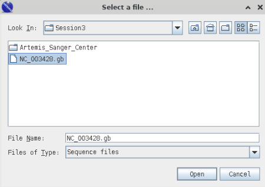
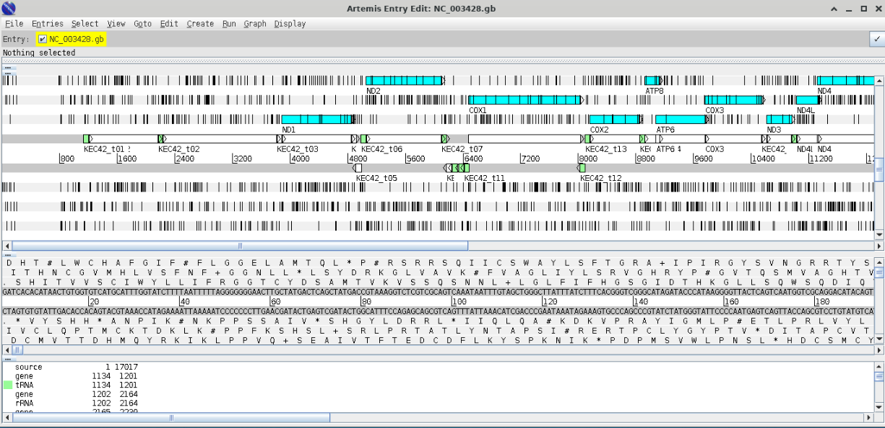

~/classdata/Bioinformatics/REFS/script/selectSeqsAboveMinLength.plGenome Visualisation Powerpoint
Requirements
Data
The data you will need for this exercise are:
- example genbank or embl files
- fastq file (pair end or single end data)
- fasta file representing assembly of data from (1)
Software
Graphics software (https://sponsa.bios.cf.ac.uk/guacamole/ or install local)
- Artemis
- IGV
Server command line modules (use command module avail to check versions):
- minimap2
- prokka
- mitos2
- NCBI Blast+
Artemis
Data
- Example genbank or embl files
Software
This can be installed locally local install instructions Warning this can take time please do not do it during teaching session.
If you are installing Artemis on a Mac you will need to first install Java Java SE 15.0.2 which can be downloaded from TechSpot. Then you can Install Artemis Software dm.
Additional sanger center traning material can be downloaded using the following link - Sanger center traning
We are going to use Artemis using the VNC access to your Linux desktop - go to https://sponsa.bios.cf.ac.uk/guacamole/ and login using your university credentials.

Start Terminal

Now Load Artemis Module and initiate Artemis with command art
module load artemis/18.2.0
artArtemis Opening Screen

Workshop
Open Genbank File
>File >OpenNavigate to your Session3 folder and select the genbank file (NC_003428.gb).

Cancel any warnings you should see the following window;

The blue highlighted area should highlight open reading frames (ORFs) and the vertical lines stop codons - notice that there are vertical line in the middle of ORFs this indicates that we are using the wrong codon table. Arrange your graphics windows so you can see the Opening window which will be hidden behind the gene display window - you should see something like this.

Now change the codon table by selecting
> Options > Genetic Code Tables
selecet
Vertebrate MitochondrialYour gene visualisation should now look like this

Excercises
As we look at creating are own annotation you will be able to visual the various outputs using Artemis.
I have included a range of extension exercises / guides generated by Sanger center (the people to wrote Artemis) these are included in you Session Folder under Artemis_Sanger_Center
IGV
Data
- Example genbank or embl files
Software
[Integrative Genomics Viewer](https://software.broadinstitute.org/software/igv/) can be IGV local - Warning this can take time please do not do it during teaching session].
We are going to use Artemis using the VNC access to your Linux desktop - go to https://sponsa.bios.cf.ac.uk/guacamole/ and login using your university credentials.
Guacamole Opening Screen
Start Terminal
Now Load IGV Module and initiate Artemis with command igv.sh
module load module load igv/2.12.3
igv.shIVG Opening Screen

Workshop
Now open the GenBank file using Genomes
> Genomes > Load Genome from FileSelect GenBank file using file browser - you should see the following image

Excercise
As you generate annotations - look to see how you can overlay them into IVG and also try and visualise the whole bacterial genome and its prokka annotation.
minimap2
Data
- fastq file (pair end or single end data)
- fasta file representing assembly of data from (1)
Software
(Minimap - mapping software)[https://github.com/lh3/minimap2]
module load minimap2/2.14Samtools - bam/sam tools utilities (for alignment files)
module load samtools/1.15.1Workshop
Align sequences to your assemblies and convert to Bam file
minimap2 -ax sr [your contigs.fasta] [forward_read.fastq] [reverse_read.fastq] > aln.sam
samtools view -b -S aln.sam > aln.bam
samtools sort aln.bam > aln_sorted.bam
samtools index aln_sorted.bam
Excersise Minimap
Overlay the bam file you have generated into your assembly contig using Artemis and IGV
Prokka
Data
- Sequence reads and assembled genomes (contigs.fasta)
Software
module load prookacheck installed version with module avail
Workshop
Prokka
Summary: Prokka is a piece of software that is designed to identify genes from sequence data. It works on prokaryotes. Once it identifies genes, it creates a file including the sequence for the sample, along with a set of annotations to that sequence, which identify the locations of genes.
Basic commands / usage: To run prokka on an assembly (with an example filename of ‘contigs.fa’ use the command:
module load prokka_mambaforge/1.14.6
prokka contigs.faIf you want to view the names of output files, you need to provide a name for the files and a directory where they should be saved:
Choose the names of the output files with –outdir and –prefix
module load prokka_mambaforge/1.14.6
prokka --outdir mydir --prefix mygenome contigs.faNOTE: Prokka defaults to analysing Bacteria. Think about what your sample is and what translation table you should use (This is also important for Artemis!). If you’re working on mitochondria include –kingdom mito and the relevant –gcodeSome examples:
1. The Standard Code
2. The Vertebrate Mitochondrial Code
3. The Yeast Mitochondrial Code
4. The Invertebrate Mitochondrial Code
5. The Echinoderm and Flatworm Mitochondrial CodeA full command for mitochondrial annotation would look like this:
module load prokka_mambaforge/1.14.6p
prokka --outdir prokka --kingdom Mitochondria --gcode 2 assembly/contigs.fastaProkka Loop
BARRNAP - BASIC RAPID RIBOSOMAL RNA PREDICTOR
[BARNAP Github](https://github.com/tseemann/barrnap)
Summary: Barrnap predicts the location of ribosomal RNA genes in genomes. It supports bacteria (5S,23S,16S), archaea (5S,5.8S,23S,16S), metazoan mitochondria (12S,16S) and eukaryotes (5S,5.8S,28S,18S).
It takes FASTA DNA sequence as input, and write GFF3 as output. It uses the new NHMMER tool that comes with HMMER 3.1 for HMM searching in RNA:DNA style. NHMMER binaries for 64-bit Linux and Mac OS X are included and will be auto-detected. Multithreading is supported and one can expect roughly linear speed-ups with more CPUs.
Basic command Usage:
module load barrnap/0.8
barrnap [options] Your_contigs.fasta > outfile.gff
Options:
--help This help
--version Print version and exit
--citation Print citation for referencing barrnap
--kingdom [X] Kingdom: arc mito euk bac (default 'bac')
--quiet No screen output (default OFF)
--threads [N] Number of threads/cores/CPUs to use (default '8')
--lencutoff [n.n] Proportional length threshold to label as partial (default '0.8')
--reject [n.n] Proportional length threshold to reject prediction (default '0.5')
--evalue [n.n] Similarity e-value cut-off (default '1e-06')
--incseq Include FASTA input sequences in GFF3 output (default OFF)
Barnap exercises
Exercise 1:Running PROKKA and checking Annotations
Take your assembled mitochondrial genome, assemble it and run Prokka to annotate the genome. When you have done your visualization introduction you can open this in Artemis.
What do you see as you move along the genome? Are there regions where genes should be that Prokka has not annotated? How would you work out if a gene should be there?
Exercise 2: Find Ribosomal Sequences
Use barrnap to generate a GFF file predicting the position of any ribosomal sequences – remember to customize the ‘Kingdom’ parameter to reflect the source of the sequence you are using.
Mitos2
Data
- Use the assembled contig from your last session (contigs.fasta)
Software
[mitos2 source](https://gitlab.com/Bernt/MITOS), [mitos browser version](http://mitos2.bioinf.uni-leipzig.de/)
module load mitos/2.0.4bioperl-live/release-1-7-2
module load bioperl-live/release-1-7-2selectSeqsAboveMinLength
bedtools
module load bedtools2/2.30.0Workshop
Extract largest contig
Use loop to extract out your longest contig - if single contig no need to perform this step
module load bioperl-live/release-1-7-2
for i in {1..3};do
perl ~/classdata/Bioinformatics/REFS/script/selectSeqsAboveMinLength.pl <your_assembly.fasta> <largest_contig.fasta> 8000
doneAnnotate with MITOS2
MITOS is a web server for the automatic annotation of metazoan mitochondrial genomes. MITOS allows a reliable and consistent annotation of proteins and non-coding RNAs. The analysis steps are as follows:
• Candidate protein coding genes are found by detecting congruences in the results of blastx searches against the amino acid sequences of the annotated proteins of metazoan mitochondrial genomes found in the NCBI RefSeq 81. A postprocessing step detects start and stop codons, duplicates, and hits belonging to the same transcript, e.g. frame shift or splicing.
• tRNAs are annotated using MITFI, i.e. novel structure-based covariance models as described in Jühling, et al. Nucleic Acids Research, 2012, 40(7):2833-2845. This approach was shown to have an unmatched sensitivity (outperforming ARWEN and tRNAscan-SE, respectively) and a precision higher than ARWEN and equivalent to tRNAscan-SE.
• rRNA annotation is performed using structure-based covariance # models that have been developed similarly to the tRNA models. Structural considerations improve 5’ and 3’ end predictions of the rRNAs.
• In a final step, conflicts are resolved and the outcome is prepared for visualization.
NB ensure you create you output folder before you run mitos
mkdir mitos_annot
runmitos.py -i contigs.fasta -c 2 -o mitos_annot -R ~/classdata/Bioinformatics/REFS/mitos/ -r refseq81m --rrna 0 --trna 0 --intron 0 --debug --noplotloop would be something like this
#!/bin/bash
workdir=~/mydata/Session3/
module load mitos/2.0.4
for i in {1..3}; do
mkdir grp${i}_mitos_annot
runmitos.py -i "${workdir}/group${i}_unknown_cetacean_assembly.fasta" \
-c 2 \
-o grp${i}_mitos_annot \
-R ~/classdata/Bioinformatics/REFS/mitos/ \
-r refseq81m \
--rrna 0 \
--trna 0 \
--intron 0 \
--debug \
--noplot
done
module unload mitos/2.0.4Worked Mitoss Loop example
Extract Fasta sequence for genes in Bed file
You can extract the fasta sequence for the genes in the bed file using bedtools getfasta:
module load bedtools2/2.30.0
bedtools getfasta –fi contigs.fasta -bed result.bed -name >result.fastaOr using a loop
for i in {1..3};
do
bedtools getfasta -fi spades_output_${i}/before_rr.fasta -bed mitos_${i}/result.bed -name >mitos_${i}_result.fasta
done
mitos2 Excersises
We will now annotate your genome using mitos:
Use seqtk seq to select only the largest contig into a new file
Use mitos to annotate the contig, and visualize it with Artemis
Create a loop to generate the output for all canidiea assembiles
[Extension] Use the BEDtools to extract the sequence of the annotated genes
[Extension] Use seqtk to extract just the COX1 gene
NCBI Blast+
Data
- Use the assembled contig from your last session (contigs.fasta)
- Blast Databases, Location:
~/classdata/Bioinformatics/REFS/blastdb/
swissprot -- uniprot protein database (Uniprot -- annotated protein database)
mito_pro -- metazoan mitochondrial database
16S_ribosomal_RNA
16S ribosomal databaseSoftware
NCBI Blast+ suite available Don’t forget to load the blast and any other modules you need!
module load blast-plus/2.12.0Anatomy of the BLAST command
A basic blast command states your reference database that has been constructed, your query, and an output file: blastx –db /home/db/fish –query contigs.fasta –out contigs_blx.txt This uses blastx to match DNA query against protein database. Targets the protein database stored at /home/db/ that’s named ‘fish’. Blast using contig.fasta file and puts the output in contig_blx.txt
BLAST Programs
| Program | Input-Output | Description |
|---|---|---|
| blastn | nucleotide-nucleotide | This program, given a DNA query, returns the most similar DNA sequences from the DNA database that the user specifies. |
| blastp | protein-protein | This program, given a protein query, returns the most similar protein sequences from the protein database that the user specifies. |
| blastx | nucleotide | 6-frame translation-protein This program compares the six-frame conceptual translation products of a nucleotide query sequence (both strands) against a protein sequence database. |
| tblastx | nucleotide | 6-frame translation-nucleotide 6-frame translation This program is the slowest of the BLAST family. It translates the query nucleotide sequence in all six possible frames and compares it against the six-frame translations of a nucleotide sequence database. The purpose of tblastx is to find very distant relationships between nucleotide sequences. |
| tblastn | protein-nucleotide | 6-frame translation This program compares a protein query against the all six reading frames of a nucleotide sequence database. |
| psi-blast | position-specific | This program is used to find distant relatives of a protein. First, a list of all closely related proteins is created. These proteins are combined into a general “profile” sequence, which summarises significant features present in these sequences. A query against the protein database is then run using this profile, and a larger group of proteins is found. This larger group is used to construct another profile, and the process is repeated. By including related proteins in the search, PSI-BLAST is much more sensitive in picking up distant evolutionary relationships than a standard protein-protein BLAST. |
| megablast | large queries seqs | When comparing large numbers of input sequences via the command-line BLAST, “megablast” is much faster than running BLAST multiple times. It concatenates many input sequences together to form a large sequence before searching the BLAST database, then post-analyze the search results to glean individual alignments and statistical values |
BLAST Databases
Currently installed are:
• swissprot – uniprot protein database (Uniprot – annotated protein database) • mito_pro – metazoan mitochondrial database • 16S_ribosomal_RNA – 16S ribosomal database • hum_mt_pep – human mitochondrial
You already have the databases you require today but for reference it is at location
~/classdata/Bioinformatics/REFS/blastdb/To create blast databases use the makeblastdb. To create a new database:
makeblastdb -in nucleotide_seq.fa –dbtype nucl –title my_db -out my_seqCommand line options
-in [input_file]
-dbtype [molecule_type], nucl – nucleotide or prot - protein
-title [database_title]
-out [database_name]OTHER OPTIONS
blastn [-h] [-help] [-import_search_strategy filename]
[-export_search_strategy filename] [-task task_name] [-db database_name]
[-dbsize num_letters] [-gilist filename] [-seqidlist filename]
[-negative_gilist filename] [-negative_seqidlist filename]
[-taxids taxids] [-negative_taxids taxids] [-taxidlist filename]
[-negative_taxidlist filename] [-entrez_query entrez_query]
[-db_soft_mask filtering_algorithm] [-db_hard_mask filtering_algorithm]
[-subject subject_input_file] [-subject_loc range] [-query input_file]
[-out output_file] [-evalue evalue] [-word_size int_value]
[-gapopen open_penalty] [-gapextend extend_penalty]
[-perc_identity float_value] [-qcov_hsp_perc float_value]
[-max_hsps int_value] [-xdrop_ungap float_value] [-xdrop_gap float_value]
[-xdrop_gap_final float_value] [-searchsp int_value] [-penalty penalty]
[-reward reward] [-no_greedy] [-min_raw_gapped_score int_value]
[-template_type type] [-template_length int_value] [-dust DUST_options]
[-filtering_db filtering_database]
[-window_masker_taxid window_masker_taxid]
[-window_masker_db window_masker_db] [-soft_masking soft_masking]
[-ungapped] [-culling_limit int_value] [-best_hit_overhang float_value]
[-best_hit_score_edge float_value] [-subject_besthit]
[-window_size int_value] [-off_diagonal_range int_value]
[-use_index boolean] [-index_name string] [-lcase_masking]
[-query_loc range] [-strand strand] [-parse_deflines] [-outfmt format]
[-show_gis] [-num_descriptions int_value] [-num_alignments int_value]
[-line_length line_length] [-html] [-sorthits sort_hits]
[-sorthsps sort_hsps] [-max_target_seqs num_sequences]
[-num_threads int_value] [-remote] [-version]
Exercises: Annotate your mitochondria
Take your assembled mitochondrial genome and identify mitochondrial orthologues using blast.
Perform blastx analysis of your sequence against the mitochondrial protein database. Interrogate the using ‘less’.
Re-run the blastx analysis with the output format parameter set to a cutomised
-outfmt 6, which will output the data into a tablular format compatible with Artemis.
blastx -query [contigs.fasta] -db ~/classdata/Bioinformatics/REFS/blastdb/hum_mt_pep -out [output.txt] -outfmt "6 qseqid sseqid pident length mismatch gapopen sstart send qstart qend evalue bitscore"You can now open the fasta sequence you have used in the blast with Artemis and then overlay with the clast output file.
Repeat the blastx analysis of your sequence against the mitochondrial protein database [mito_pro] only returning blast matches with an E value lower that 1E-10 and using all 4 threads.
Repeat the blastx analysis of your sequence against the mitochondrial protein database, only returning blast matches with an E value lower that 1E-10, using all 4 threads, limiting the outputs so that you keep to 100 and putting the outputs into the tabular format compatible with Artemis.
[Extension] Produce a loop to annotate all assembled contigs using blast
[Extension] You can try repeating this exercise with swisprot and note the differences